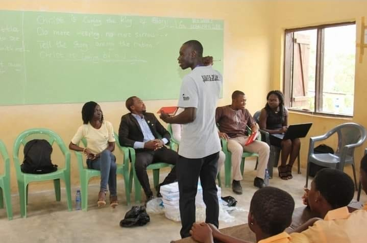
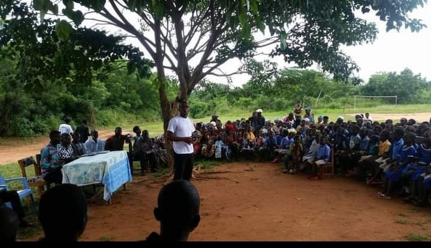

01
Leadership & capacity building
LEAD WITH PURPOSEInteractive capacity-building workshops strengthen confidence, communication, teamwork and the practical skills to lead with integrity.
We turn possibility into practice with learning, mentorship and shared experiences that help young people step into leadership.

Our activities respond to young people’s real ambitions and the needs of the communities they call home.
Interactive capacity-building workshops strengthen confidence, communication, teamwork and the practical skills to lead with integrity.
Focused sessions help young people navigate the transition from school into work, further study and independent life.
Conversations with mentors and professionals help emerging leaders explore their options and make informed choices.
We nurture initiative, problem-solving and the confidence to turn ideas into opportunities that serve people and communities.
Interschool and cross-community platforms bring young people together to exchange ideas, build networks and imagine a shared future.
Our program experiences connect campus communities, rural young people, educators and professionals. Every workshop and forum is a chance to share knowledge, see new possibilities and bring learning back to the communities that need it.
Ask about our work ↗